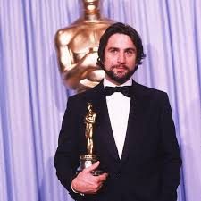

Career
Robert De Niro's illustrious career began in the early 1960s, and he quickly made a name for himself with standout performances in various films. His breakthrough role came in 1973 with Martin Scorsese's Mean Streets, where his portrayal of Johnny Boy showcased his raw talent and marked the start of a long-lasting collaboration with the director. De Niro won his first Academy Award for Best Supporting Actor in 1974 for his role as the young Vito Corleone in The Godfather Part II. This was followed by a series of critically acclaimed performances, including his Oscar-winning role in Raging Bull (1980), where he transformed his physique to embody the complex boxer Jake LaMotta. Over the years, De Niro has worked with some of the most esteemed directors and has received numerous accolades, solidifying his status as one of the most versatile and respected actors in Hollywood.
